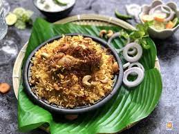

Lucknowi Biriyani
Ingredients:
•2 cups Basmati rice
•500g mutton or chicken
•2 large onions, thinly sliced
•2 tomatoes, chopped
•1/2 cup plain yogurt
•2-3 green chilies, slit
•2-3 cloves of garlic, minced
•1-inch piece of ginger, minced
•A handful of fresh mint leaves
•A handful of fresh coriander leaves
•2-3 tablespoons ghee (clarified butter)
•Whole spices (bay leaves, cloves, cardamom, cinnamon sticks)
•Ground spices (saffron, nutmeg, mace, cardamom powder)
•Kewra water (screw pine essence)
•Salt to taste
Instructions:
1.Wash and soak the Basmati rice in water for 30 minutes. Drain and set aside.
2.In a large, heavy-bottomed pan, heat ghee over medium heat. Add the whole spices and sauté until fragrant.
3.Add the sliced onions and cook until they turn golden brown and crispy. Remove some for garnishing.
4.Add the minced ginger, garlic, green chilies, and chopped tomatoes. Cook until the tomatoes soften and the oil separates.
5.Add your choice of meat and cook until it changes color.
6.Add yogurt, mint leaves, and half of the coriander leaves. Stir well and cook for a few minutes.
7.Sprinkle ground spices (saffron, nutmeg, mace, cardamom powder) and salt. Mix.
8.Layer the soaked rice over the meat mixture. Sprinkle kewra water and the remaining coriander leaves.
9.Place a layer of saffron strands soaked in warm milk for color and flavor.
10.Cover the pot with a tight-fitting lid or seal it with dough to trap steam.
11.Cook on low heat for about 25-30 minutes until the rice is cooked and the meat is tender.
12.Gently fluff the biryani with a fork, garnish with fried onions, and serve hot.
Lucknowi Biryani is known for its fragrant aroma and mild, delicate flavors. Enjoy this regal dish!